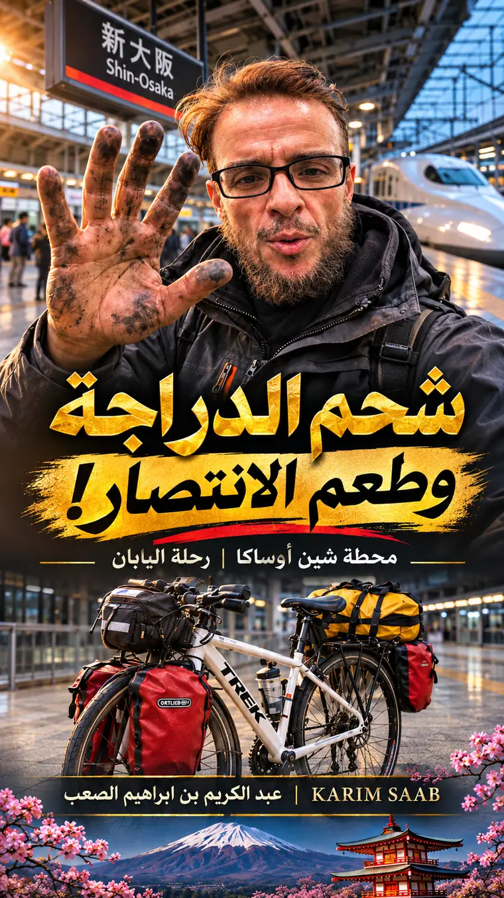

شحم الدراجة وطعم الانتصار في محطة أوساكا! | رحلة اليابان

غلاف توضيحي مُنشأ بالذكاء الاصطناعي اعتمادًا على صور شخصية مرجعية؛ ليس صورة فوتوغرافية أصلية من الموقع.
النص الكامل المعتمد
شحم الدراجة وطعم الانتصار في محطة أوساكا! | رحلة اليابان
في قلب محطة «شين-أوساكا» (Shin-Osaka) الصاخبة في اليابان — إحدى أهم بوابات قطارات الرصاصة «شينكانسن» (Shinkansen) فائقة السرعة التي تربط شرق اليابان بغربها منذ انطلاق خط توكايدو التاريخي عام 1964 — تتجلى فلسفة السفر الحر بأصدق صورها بعيداً عن رفاهية الترحال التقليدي.
هنا، وسط آلاف المسافرين اليابانيين المنضبطين في حركتهم، يقف عبد الكريم بن ابراهيم الصعب برفقة رفيقة دربه «طير شلوى» (دراجته الهوائية)، في سباقٍ مع الوقت لفكّ أجزاء الدراجة وتغليفها أو إعادة تجميعها وفق أنظمة السكك الحديدية اليابانية الصارمة التي تشترط وضع الدراجات داخل حقائب مخصصة (Rinko) قبل الصعود أو الخروج من المحطات، وبمساعدة عابرة من مسافر أسترالي وزوجته في نقل العتاد نحو البوابة قبل تدخّل أمن المحطة.
وبروح الدعابة المعهودة، يستحضر عبد الكريم مقارنة طريفة بين قطار «الشينكانسن» الياباني وقطار الشمال في المملكة العربية السعودية (خط القصيم وحائل)، بينما تلتف حوله نظرات المارة المستغربة من هيئته المبعثرة ويديه الملطختين بشحم جنزير الدراجة.
ولعلّ السؤال الذي يقرأه في أعين المتفرجين: «الله يعينه المسكين، وش اللي حدّك على هالحوسة وهالزيوت اللي بيدينك؟»، يجد إجابته اليقينية في فلسفة المغامرة والإنجاز؛ فـ «طعم الانتصار يعدل كل شيء»، ولحظة تجميع الدراجة خلال نصف ساعة والانطلاق بها حراً نحو وجهته في أوساكا تمنح شعوراً لا يُضاهى بالرضا والامتنان لله عز وجل على القدرة على خوض تجارب يعجز عنها كثيرون ممن يكتفون بالمشاهدة.